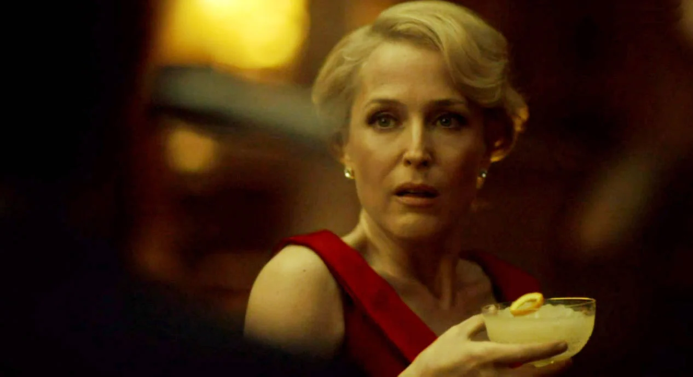

Punch Romaine

Description
Punch Romaine was served as a palate cleanser to the first class passengers aboard the Titanic on their last dinner.
It is also featured in season 3 of Hannibal.
Ingredients
- 6 cups crushed ice
- 1 cup simple syrup
- 2 cups champagne or sparkling wine.
- 1 cup white wine
- 1/3 cup freshly squeezed orange juice
- 2 tbsp. lemon juice
- 2 tbsp. White rum (optional)
- 1 medium Orange peel slivered (optional)
Preparation
Do as you please.
Source: https://downtonabbeycooks.com/titanics-punch-romaine/